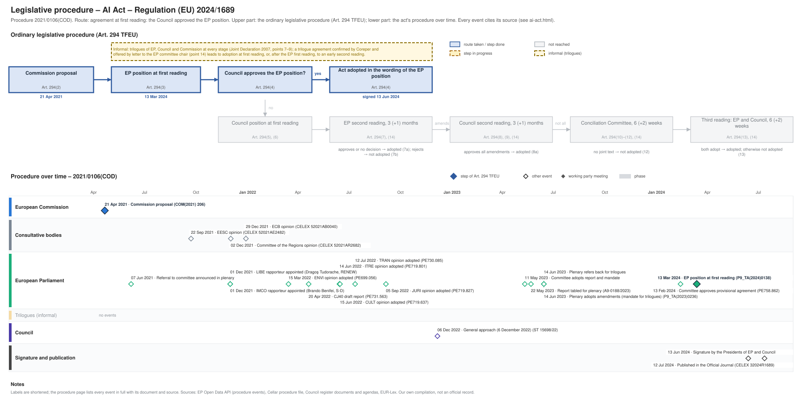

← Regulation timeline › AI Act › Legislative procedure · All procedures
Procedure 2021/0106(COD), completed. Drawing: SVG · PNG · PDF (A3) · draw.io · Page as Markdown: ai-act.md
| Stage | Completed, published 12 Jul 2024 |
|---|---|
| Route (Art. 294 TFEU) | Agreement at first reading: the Council approved the EP position |
| Latest activity | 12 Jul 2024 · Signature and publication: Published in the Official Journal (CELEX 32024R1689) |

| Committee | Role | Rapporteur | Shadow rapporteurs |
|---|---|---|---|
| IMCO Internal Market and Consumer Protection | Responsible | Brando Benifei (S&D), appointed 01 Dec 2021 | Jean-Lin Lacapelle (ID), Deirdre Clune (EPP), Kosma Złotowski (ECR), Svenja Hahn (Renew), Kim Van Sparrentak (Greens/EFA), Kateřina Konečná (The Left) |
| LIBE Civil Liberties, Justice and Home Affairs | Responsible | Dragoş Tudorache (Renew), appointed 01 Dec 2021 | Jaak Madison (ID), Axel Voss (EPP), Petar Vitanov (S&D), Rob Rooken (ECR), Sergey Lagodinsky (Greens/EFA), Cornelia Ernst (The Left) |
| ENVI Environment, Climate and Food Safety | Opinion | Susana Solís Pérez (Renew), appointed 15 Sep 2021 | – |
| TRAN Transport and Tourism | Opinion | Josianne Cutajar (S&D), appointed 04 Nov 2021 | – |
| CULT Culture and Education | Role not given | Marcel Kolaja (Greens/EFA), appointed 13 Jul 2021 | – |
| ITRE Industry, Research and Energy | Role not given | Eva Maydell (EPP), appointed 11 Jan 2022 | – |
| JURI Legal Affairs | Role not given | Axel Voss (EPP), appointed 10 Jan 2022 | – |
Source: EP Open Data API (participations) and the Legislative Observatory (joint committee, opinions declined); names link to each Member's page on the EP website. The API names no committee for shadow rapporteurs; they are assigned by the EP's order of participants, which groups each committee.
| Date | Actor | Event | Document | Source |
|---|---|---|---|---|
| 2021-04-21 | European Commission | Commission proposal (Art. 294(2) TFEU) | COM(2021) 206 | Cellar procedure file 2021/106 (CELEX 52021PC0206) |
| 2021-06-07 | European Parliament | Referral to committee announced in plenary | EP procedure file | EP Open Data API, procedure 2021-0106 (REFERRAL) |
| 2021-09-22 | Consultative bodies | EESC opinion | CELEX 52021AE2482 | Cellar procedure file 2021/106 |
| 2021-12-01 | European Parliament | IMCO rapporteur appointed (Brando Benifei, S-D) | EP procedure file | EP Open Data API, procedure 2021-0106 (participation RAPPORTEUR) |
| 2021-12-01 | European Parliament | LIBE rapporteur appointed (Dragoş Tudorache, RENEW) | EP procedure file | EP Open Data API, procedure 2021-0106 (participation RAPPORTEUR) |
| 2021-12-02 | Consultative bodies | Committee of the Regions opinion | CELEX 52021AR2682 | Cellar procedure file 2021/106 |
| 2021-12-29 | Consultative bodies | ECB opinion | CELEX 52021AB0040 | Cellar procedure file 2021/106 |
| 2022-03-15 | European Parliament | ENVI opinion adopted | PE699.056 | EP Open Data API, procedure 2021-0106 (COMMITTEE_ADOPTING_OPINION) |
| 2022-04-20 | European Parliament | CJ40 draft report | PE731.563 | EP Open Data API, procedure 2021-0106 (COMMITTEE_TABLING_REPORT) |
| 2022-06-14 | European Parliament | ITRE opinion adopted | PE719.801 | EP Open Data API, procedure 2021-0106 (COMMITTEE_ADOPTING_OPINION) |
| 2022-06-15 | European Parliament | CULT opinion adopted | PE719.637 | EP Open Data API, procedure 2021-0106 (COMMITTEE_ADOPTING_OPINION) |
| 2022-07-12 | European Parliament | TRAN opinion adopted | PE730.085 | EP Open Data API, procedure 2021-0106 (COMMITTEE_ADOPTING_OPINION) |
| 2022-09-05 | European Parliament | JURI opinion adopted | PE719.827 | EP Open Data API, procedure 2021-0106 (COMMITTEE_ADOPTING_OPINION) |
| 2022-12-06 | Council | General approach (6 December 2022) | ST 15698/22 | Cellar procedure file 2021/106 (Council register) |
| 2023-05-11 | European Parliament | Committee adopts report and mandate | EP procedure file | EP Open Data API, procedure 2021-0106 (COMMITTEE_ADOPTING_REPORT) |
| 2023-05-22 | European Parliament | Report tabled for plenary | A9-0188/2023 | EP Open Data API, procedure 2021-0106 (TABLING_PLENARY) |
| 2023-06-14 | European Parliament | Plenary refers back for trilogues | EP procedure file | EP Open Data API, procedure 2021-0106 (PLENARY_REFER_COMMITTEE_INTERINSTITUTIONAL_NEGOTIATIONS) |
| 2023-06-14 | European Parliament | Plenary adopts amendments (mandate for trilogues) | P9_TA(2023)0236 | EP Open Data API, procedure 2021-0106 (PLENARY_AMEND) |
| 2024-02-13 | European Parliament | Committee approves provisional agreement | PE758.862 | EP Open Data API, procedure 2021-0106 (COMMITTEE_APPROVE_PROVISIONAL_AGREEMENT) |
| 2024-03-13 | European Parliament | EP position at first reading (Art. 294(3) TFEU) | P9_TA(2024)0138 | EP Open Data API, procedure 2021-0106 (PLENARY_AMEND_PROPOSAL) |
| 2024-06-13 | Signature and publication | Signature by the Presidents of EP and Council | EP procedure file | EP Open Data API, procedure 2021-0106 (SIGNATURE) |
| 2024-07-12 | Signature and publication | Published in the Official Journal | CELEX 32024R1689 · en.md de.md | EP Open Data API, procedure 2021-0106 (PUBLICATION_OFFICIAL_JOURNAL) |
Every document the Council register, the EU database of the Parliament of Austria or the EP lists for the procedure, with its state: public documents link to the official file; documents that are not public link to their entry in the Austrian database where there is one (metadata only). Status: public; not public; not public, leak available (an unofficial copy is known to circulate outside the institutions; it is neither published nor quoted here). Released: when a document listed as not public was released, by the date of the Council's public PDF (a technical date) or else the day our daily check found it public.
| Date | Document | Kind | Subject | Status | Released | Text |
|---|---|---|---|---|---|---|
| 2021-04-23 | ST 8115/21 | council-transmission | Proposal for a REGULATION OF THE EUROPEAN PARLIAMENT AND OF THE COUNCIL LAYING DOWN HARMONISED RULES ON ARTIFICIAL INTELLIGENCE (ARTIFICIAL INTELLIGENCE ACT) … | public status unknown | – | – |
| 2021-04-23 | ST 8115/21 ADD 1 | council-transmission | ANNEXES to the Proposal for a Regulation of the European Parliament and of the Council LAYING DOWN HARMONISED RULES ON ARTIFICIAL INTELLIGENCE (ARTIFICIAL … | public status unknown | – | – |
| 2021-04-23 | ST 8115/21 ADD 2 | council-transmission | COMMISSION STAFF WORKING DOCUMENT IMPACT ASSESSMENT Accompanying the Proposal for a Regulation of the European Parliament and of the Council LAYING DOWN … | public status unknown | – | – |
| 2021-04-23 | ST 8115/21 ADD 3 | council-transmission | COMMISSION STAFF WORKING DOCUMENT IMPACT ASSESSMENT ANNEXES Accompanying the Proposal for a Regulation of the European Parliament and of the Council LAYING … | public status unknown | – | – |
| 2021-04-23 | ST 8115/21 ADD 4 | council-transmission | COMMISSION STAFF WORKING DOCUMENT EXECUTIVE SUMMARY OF THE IMPACT ASSESSMENT REPORT Accompanying the Proposal for a Regulation of the European Parliament and … | public status unknown | – | – |
| 2021-04-23 | ST 8115/21 ADD 5 | council-transmission | REGULATORY SCRUTINY BOARD OPINION Proposal for a Regulation of the European Parliament and of the Council aying down harmonized rules on Artificial … | public status unknown | – | – |
| 2021-06-14 | ST 9797/21 | council-transmission | Opinion on the application of the Principles of Subsidiarity and Proportionality | public status unknown | – | – |
| 2021-06-15 | ST 9661/21 | council-note | Optional consultation of the Committee of the Regions | public status unknown | – | – |
| 2021-08-13 | ST 11205/21 | council-transmission | Opinion on the application of the Principles of Subsidiarity and Proportionality | public status unknown | – | – |
| 2021-08-13 | ST 11217/21 | council-transmission | Opinion on the application of the Principles of Subsidiarity and Proportionality1 | public status unknown | – | – |
| 2021-09-22 | CELEX 52021AE2482 | opinion | Opinion of the European Economic and Social Committee on Proposal for a Regulation of the European Parliament and of the Council laying down harmonised rules … | public | – | – |
| 2021-10-12 | ST 12778/21 | council-transmission | COMMUNICATION FROM THE COMMISSION TO THE EUROPEAN PARLIAMENT, THE COUNCIL, THE EUROPEAN ECONOMIC AND SOCIAL COMMITTEE AND THE COMMITTEE OF THE REGIONS … | public status unknown | – | – |
| 2021-10-18 | ST 12778/21 REV 1 | council-transmission | COMMUNICATION FROM THE COMMISSION TO THE EUROPEAN PARLIAMENT, THE COUNCIL, THE EUROPEAN ECONOMIC AND SOCIAL COMMITTEE AND THE COMMITTEE OF THE REGIONS … | public status unknown | – | – |
| 2021-12-02 | CELEX 52021AR2682 | opinion | Opinion of the European Committee of the Regions — European approach to artificial intelligence — Artificial Intelligence Act (revised opinion) | public | – | – |
| 2021-12-10 | PE699.056 | ep-draft-opinion | DRAFT OPINION on the proposal for a regulation of the European Parliament and of the Council laying down harmonised rules on Artificial Intelligence … | public | – | – |
| 2021-12-29 | CELEX 52021AB0040 | opinion | Opinion of the European Central Bank of 29 December 2021 on a proposal for a regulation laying down harmonised rules on artificial intelligence (CON/2021/40) … | public | – | – |
| 2022-02-21 | PE719.637 | ep-draft-opinion | DRAFT OPINION on the proposal for a regulation of the European Parliament and of the Council laying down harmonised rules on artificial intelligence … | public | – | – |
| 2022-03-02 | PE719.827 | ep-draft-opinion | DRAFT OPINION on the proposal for a regulation of the European Parliament and of the Council laying down harmonised rules on artificial intelligence … | public | – | – |
| 2022-03-03 | PE719.801 | ep-draft-opinion | DRAFT OPINION on the proposal for a regulation of the European Parliament and of the Council laying down harmonised rules on artificial intelligence … | public | – | – |
| 2022-03-29 | PE730.085 | ep-draft-opinion | DRAFT OPINION on the proposal for a regulation of the European Parliament and of the Council laying down harmonised rules on artificial intelligence … | public | – | – |
| 2022-04-20 | PE731.563 | ep-draft-report | DRAFT REPORT on the proposal for a regulation of the European Parliament and of the Council on harmonised rules on Artificial Intelligence (Artificial … | public | – | – |
| 2022-04-22 | PE699.056 | ep-opinion | OPINION on the proposal for a regulation of the European Parliament and of the Council laying down harmonised rules on Artificial Intelligence (Artificial … | public | – | – |
| 2022-04-22 | ST 8364/22 | council-transmission | Opinion on the application of the Principles of Subsidiarity and Proportionality | public status unknown | – | – |
| 2022-06-14 | PE719.801 | ep-opinion | OPINION on the proposal for a regulation of the European Parliament and of the Council laying down harmonised rules on artificial intelligence (Artificial … | public | – | – |
| 2022-06-16 | PE719.637 | ep-opinion | OPINION on the proposal for a regulation of the European Parliament and of the Council laying down harmonised rules on artificial intelligence (Artificial … | public | – | – |
| 2022-07-12 | PE730.085 | ep-opinion | OPINION on the proposal for a regulation of the European Parliament and of the Council laying down harmonised rules on artificial intelligence (artificial … | public | – | – |
| 2022-09-12 | PE719.827 | ep-opinion | OPINION on the proposal for a regulation of the European Parliament and of the Council laying down harmonised rules on artificial intelligence (Artificial … | public | – | – |
| 2022-12-06 | ST 15698/22 | council-position | General approach (6 December 2022) | public | – | – |
| 2023-05-22 | A9-0188/2023 | ep-report | REPORT on the proposal for a regulation of the European Parliament and of the Council on laying down harmonised rules on Artificial Intelligence (Artificial … | public | – | – |
| 2023-06-14 | P9_TA(2023)0236 | ep-position | Artificial Intelligence Act | public | – | – |
| 2024-02-02 | PE758.862 | agreed-text | PROVISIONAL AGREEMENT RESULTING FROM INTERINSTITUTIONAL NEGOTIATIONS Proposal for a regulation laying down harmonised rules on Artificial Intelligence … | public | – | – |
| 2024-03-05 | PE 24/24 | council-note | REGULATION OF THE EUROPEAN PARLIAMENT AND OF THE COUNCIL laying down harmonised rules on artificial intelligence and amending Regulations (EC) No 300/2008, … | public status unknown | – | – |
| 2024-03-13 | P9_TA(2024)0138 | ep-position | Artificial Intelligence Act | public | – | – |
| 2024-03-18 | ST 7536/24 | council-note | Outcome of the European Parliament's first reading (Strasbourg, 11 to 14 March 2024) | public status unknown | – | – |
| 2024-05-08 | ST 9794/24 | council-note | AOB Framework Convention on Artificial Intelligence, Human Rights, Democracy and the Rule of Law - Information from the Commission | public status unknown | – | – |
| 2024-05-13 | ST 9823/24 | council-note | Information to the Council and request for endorsement to sign on behalf of the EU the AI Seoul Summit Leaders’ Declaration, the Ministers’ Statement, as well … | public status unknown | – | – |
| 2024-05-14 | ST 9645/24 | council-note | Draft REGULATION OF THE EUROPEAN PARLIAMENT AND OF THE COUNCIL laying down harmonised rules on artificial intelligence and amending Regulations (EC) No … | public status unknown | – | – |
| 2024-05-14 | ST 9645/24 ADD 1 | council-note | Draft REGULATION OF THE EUROPEAN PARLIAMENT AND OF THE COUNCIL laying down harmonised rules on artificial intelligence and amending Regulations (EC) No … | public status unknown | – | – |
| 2024-05-15 | ST 9645/24 ADD 1 REV 1 | council-note | Draft REGULATION OF THE EUROPEAN PARLIAMENT AND OF THE COUNCIL laying down harmonised rules on artificial intelligence and amending Regulations (EC) No … | public status unknown | – | – |
| 2024-05-15 | ST 9645/24 ADD 1 REV 2 | council-note | Draft REGULATION OF THE EUROPEAN PARLIAMENT AND OF THE COUNCIL laying down harmonised rules on artificial intelligence and amending Regulations (EC) No … | public status unknown | – | – |
| 2024-05-15 | ST 9645/24 REV 1 | council-note | Draft REGULATION OF THE EUROPEAN PARLIAMENT AND OF THE COUNCIL laying down harmonised rules on artificial intelligence and amending Regulations (EC) No … | public status unknown | – | – |
| 2024-05-22 | ST 10199/24 | council-note | Voting result REGULATION OF THE EUROPEAN PARLIAMENT AND OF THE COUNCIL laying down harmonised rules on artificial intelligence and amending Regulations (EC) No … | public status unknown | – | – |
| 2024-06-04 | PE 24/24 REV 1 | council-note | REGULATION OF THE EUROPEAN PARLIAMENT AND OF THE COUNCIL LAYING DOWN HARMONISED RULES ON ARTIFICIAL INTELLIGENCE AND AMENDING REGULATIONS (EC) NO 300/2008, … | public status unknown | – | – |
Unofficial Markdown conversions for reading, searching and project folders; only the official document is authentic. "Read" opens the rendered text on GitHub, where a link to a provision (#art-13, #rec-12, #annex-i) jumps to it.
| Date | Stage | Document | Markdown | Read |
|---|---|---|---|---|
| 2024-07-12 | oj | CELEX 32024R1689 | en de | GitHub |
| 2025-10-09 | corrigendum | CELEX 32024R1689R(01) | de | GitHub |
Standardisation requests (Art. 10 of Regulation (EU) No 1025/2012) ask CEN, CENELEC and ETSI to draft harmonised standards in support of the act; standards cited in the Official Journal give a presumption of conformity. Planned requests come from the Commission's annual Union work programmes for European standardisation (Art. 8), which are plans, not decisions. Deadlines as set in the request's annexes (hand-checked).
COMMISSION IMPLEMENTING DECISION of 23.6.2025 on a standardisation request to the European Committee for Standardisation and the European Committee for Electrotechnical Standardisation as regards high-risk AI-systems in support of Regulation (EU) 2024/1689 of the European Parliament and of the Council and repealing Implementing Decision C(2023)3215
adopted 2025-06-23; expires 2027-02-28; ESOs: CEN, CENELEC. eNorm · decision and annexes · en.md · de.md
| Item | Standard(s) requested | Kind | Deadline |
|---|---|---|---|
| 1 | Harmonised standard(s) and if necessary European standardisation deliverable(s) on risk management systems for AI systems | new | 2025-08-31 |
| 2 | Harmonised standard(s) and if necessary European standardisation deliverable(s) on governance and quality of datasets used to build AI systems | new | 2025-08-31 |
| 3 | Harmonised standard(s) and if necessary European standardisation deliverable(s) on record keeping through logging capabilities by AI systems | new | 2025-08-31 |
| 4 | Harmonised standard(s) and if necessary European standardisation deliverable(s) on transparency and information provisions for users of AI systems | new | 2025-08-31 |
| 5 | Harmonised standard(s) and if necessary European standardisation deliverable(s) on human oversight of AI systems | new | 2025-08-31 |
| 6 | Harmonised standard(s) and if necessary European standardisation deliverable(s) on accuracy specifications for AI systems | new | 2025-08-31 |
| 7 | Harmonised standard(s) and if necessary European standardisation deliverable(s) on robustness specifications for AI systems | new | 2025-08-31 |
| 8 | Harmonised standard(s) and if necessary European standardisation deliverable(s) on cybersecurity specifications for AI systems | new | 2025-08-31 |
| 9 | Harmonised standard(s) and if necessary European standardisation deliverable(s) on quality management systems for providers of AI systems, including post-market monitoring processes | new | 2025-08-31 |
| 10 | Harmonised standard(s) or European standardisation deliverable(s) on conformity assessment for AI systems | new | 2025-08-31 |
Source: Annex I and Article 1(1) of Commission Implementing Decision C(2025)3871 (M/613).
| Year | Action (open for its text) |
|---|---|
| 2024 | 15. Revision of standardisation request in support of Union policy on artificial intelligence
Work programme 2024, Annex, Action 15: en.md · de.md · original on EUR-Lex ↗ |
| 2025 | 11. Artificial intelligence
Work programme 2025, Annex, Action 11: en.md · de.md · original on EUR-Lex ↗ |
| 2026 | 1. Artificial intelligence
Work programme 2026, Annex, Action 1: en.md · de.md · original on EUR-Lex ↗ |
Projects of CEN, CENELEC and ETSI for the act, from their public work programmes: status, date of the current stage and the next one, and for CEN-CENELEC the forecasted date of the formal vote. Drafts of harmonised standards are not public; only the citation of a standard's reference in the Official Journal gives a presumption of conformity.
| Body | Project | Title | Status | Next step | Vote (forecast) | Request |
|---|---|---|---|---|---|---|
| CEN/CLC/JTC 21 | EN 18286:2026 WI JT021039 | Artificial intelligence - Quality management system for EU AI Act regulatory purposes | Published (2026-07-22) | – | – | M/593, M/613 |
| CEN/CLC/JTC 21 | FprEN ISO/IEC 24970 WI JT021021 | Artificial intelligence - AI system logging (ISO/IEC FDIS 24970:2026) | Under Approval (2026-08-27) | next stage (2026-10-23) | 2026-05-20 | M/593, M/613 |
| CEN/CLC/JTC 21 | prEN 18228 WI JT021024 | AI Risk Management | Under Approval (2026-07-30) | next stage (2026-09-30) | 2026-09-30 | M/593, M/613 |
| CEN/CLC/JTC 21 | prEN 18229-1 WI JT021008 | AI trustworthiness framework - Part 1: Logging | Under Approval (2026-08-20) | next stage (2026-11-30) | 2026-11-30 | M/593, M/613 |
| CEN/CLC/JTC 21 | prEN 18229-2 WI JT021047 | AI trustworthiness framework - Part 2: Transparency | Under Drafting (2026-01-06) | next stage (2026-05-05) | 2027-03-07 | M/613 |
| CEN/CLC/JTC 21 | prEN 18229-3 WI JT021056 | AI trustworthiness framework - Part 3: Human oversight | Under Enquiry (2026-07-30) | next stage (2026-10-22) | 2027-07-01 | M/613 |
| CEN/CLC/JTC 21 | prEN 18229-4 WI JT021058 | AI trustworthiness framework – Part 4: Accuracy | Under Drafting (2026-06-24) | – | 2027-07-21 | M/613 |
| CEN/CLC/JTC 21 | prEN 18229-5 WI JT021059 | AI trustworthiness framework – Part 5: Robustness | Under Drafting (2026-06-24) | – | 2027-07-21 | M/613 |
| CEN/CLC/JTC 21 | prEN 18281 WI JT021025 | Artificial Intelligence - Evaluation methods for accurate computer vision systems | Under Approval (2026-06-11) | next stage (2026-09-02) | 2026-09-02 | M/593, M/613 |
| CEN/CLC/JTC 21 | prEN 18282 WI JT021029 | Artificial intelligence - Cybersecurity specifications for AI Systems | Under Approval (2026-07-30) | next stage (2026-07-15) | 2026-07-15 | M/593, M/613 |
| CEN/CLC/JTC 21 | prEN 18283 WI JT021036 | Artificial Intelligence - Concepts, measures and requirements for managing bias in AI systems | Under Enquiry (2026-10-01) | next stage (2026-12-24) | 2027-03-03 | M/593, M/613 |
| CEN/CLC/JTC 21 | prEN 18284 WI JT021037 | Artificial Intelligence - Quality and governance of data sets in AI | Under Drafting (2024-09-05) | – | 2027-03-18 | M/593, M/613 |
| CEN/CLC/JTC 21 | prEN 18285 WI JT021038 | AI Conformity assessment framework | Under Drafting (2024-10-16) | next stage (2025-02-12) | 2026-07-29 | M/593, M/613 |
| CEN/CLC/JTC 21 | prEN 18288 WI JT021044 | Artificial Intelligence - Taxonomy of AI tasks in computer vision | Under Approval (2026-07-16) | next stage (2027-06-02) | 2027-06-02 | M/613 |
| CEN/CLC/JTC 21 | prEN ISO/IEC 23282 WI JT021012 | Artificial Intelligence - Evaluation methods for accurate natural language processing systems (ISO/IEC DIS 23282:2026) | Under Enquiry (2026-09-03) | next stage (2026-11-25) | 2027-07-26 | M/593, M/613 |
Sources: CEN/CLC/JTC 21.
Comitology committees of Member State representatives give opinions on draft implementing acts (Regulation (EU) No 182/2011); expert groups advise the Commission on delegated acts, guidance and implementation; groups set up by an act itself (e.g. the NIS Cooperation Group) bring together the Member States, the Commission and agencies. Meetings and documents as published in the Comitology Register, the Register of Commission expert groups and on the Commission's pages of these groups, from 2024 on.
Comitology committee C129100, CNECT; examination procedure (Art. 5, 6 and 7 of Regulation (EU) No 182/2011). Official source: Comitology Register ↗
Expert group X03966, CNECT. Official source: Register of Commission expert groups ↗
| Date | Meeting | Documents |
|---|---|---|
| 2026-09-17 | Ninth meeting of the European Artificial Intelligence Board | agenda |
| 2026-06-11 | Eighth meeting of the European Artificial Intelligence Board | agenda · minutes |
| 2026-03-20 | Seventh meeting of the European Artificial Intelligence Board | agenda · minutes · other document · other document · other document |
| 2025-12-04 | Sixth meeting of the European Artificial Intelligence Board | agenda · minutes · other document |
| 2025-10-24 | Fifth meeting of the European Artificial Intelligence Board | agenda · minutes |
| 2025-06-30 | Fourth meeting of the European Artificial Intelligence Board | agenda · minutes |
| 2025-03-24 | Third meeting of the European Artificial Intelligence Board | agenda · minutes |
| 2024-12-10 | Second meeting of the European Artificial Intelligence Board | agenda · minutes |
| 2024-09-10 | First meeting of the European Artificial Intelligence Board | agenda · minutes · other document |